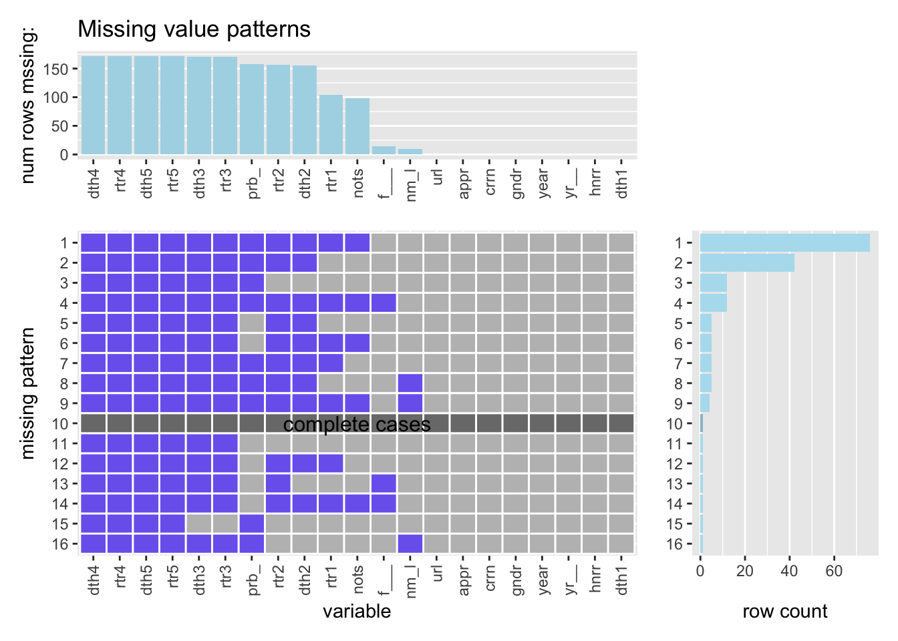

Chapter 4 Missing values
4.1 Description
For the purpose of Problem Set 4, we will use the “avengers” data set in the “fivethirtyeight” package to analyze some missing values and their patterns. We have two reasons for choosing this data set:
- First, our datasets do not have any missing values, and you can check out here: https://data.pentaq.com/TeamStats?tour=82.
- Second, we are big fans of Marvel Studio so we are passionate to analyze information about avengers. By looking through descriptions of this data set, we can measure mortality rates of 173 current and former avengers.
4.2 Data Resource
Let’s first take a glance at the data set.
## [1] "url" "name_alias" "appearances"
## [4] "current" "gender" "probationary_intro"
## [7] "full_reserve_avengers_intro" "year" "years_since_joining"
## [10] "honorary" "death1" "return1"
## [13] "death2" "return2" "death3"
## [16] "return3" "death4" "return4"
## [19] "death5" "return5" "notes"Here are explanations of the column variables:
- url: The URL of the comic character on the Marvel Wikia
- name_alias: The full name or alias of the character, which will be abbreviated as “nm_l”
- appearances:The number of comic books that character appeared in as of April 30, which will be abbreviated as “appr”
- current: Is the member currently active on an avengers affiliated team?, which will be abbreviated as “crrn”
- gender: The recorded gender of the character, which will be abbreviated as “gndr”
- probationary_intro: Sometimes the character was given probationary status as an Avenger, this is the date that happened, which will be abbreviated as “prob_”
- full_reserve_avengers_intro: The month and year the character was introduced as a full or reserve member of the Avengers, which will be abbreviated as "f___"
- year: The year the character was introduced as a full or reserve member of the Avengers
- years_since_joining: 2015 minus the year, which will be abbreviated as "yr__"
- honorary: The status of the avenger, if they were given “Honorary” Avenger status, if they are simply in the “Academy,” or “Full” otherwise, which will be abbreviated as “hnrr”
- death1: TRUE if the Avenger died, FALSE if not, which will be abbreviated as “dth1”
- return1: TRUE if the Avenger returned from their first death, FALSE if they did not, blank if not applicable, which will be abbreviated as “rtr1”
- death2: TRUE if the Avenger died a second time after their revival, FALSE if they did not, blank if not applicable, which will be abbreviated as “dth2”
- return2: TRUE if the Avenger returned from their second death, FALSE if they did not, blank if not applicable, which will be abbreviated as “rtr2”
- death3: TRUE if the Avenger died a third time after their second revival, FALSE if they did not, blank if not applicable, which will be abbreviated as “dth3”
- return3: TRUE if the Avenger returned from their third death, FALSE if they did not, blank if not applicable, which will be abbreviated as “rtr3”
- death4: TRUE if the Avenger died a fourth time after their third revival, FALSE if they did not, blank if not applicable, which will be abbreviated as “dth4”
- return4: TRUE if the Avenger returned from their fourth death, FALSE if they did not, blank if not applicable, which will be abbreviated as “rtr4”
- death5: TRUE if the Avenger died a fifth time after their fourth revival, FALSE if they did not, blank if not applicable, which will be abbreviated as “dth5”
- return5: TRUE if the Avenger returned from their fifth death, FALSE if they did not, blank if not applicable, which will be abbreviated as “rtr5”
- notes: Descriptions of deaths and resurrections
4.3 Missing Patterns
Let’s create some missing plots to see some partterns of the “avengers” data set.

Now we observed some missing patterns.
- From the top graph:
- We observed that every comic character of this data set has an url on the Marvel Wikia and appears somewhere once in comic books as of April 30(appr); most of them have full name or alias while some does not(nm_l).
- Additionally, they all joined the Avengers before (year & yr__) and their current status on any avengers affiliated teams are recorded(crnn).
- More precisely, most of them joined the Avengers directly, which means they were not given probationary status as an Avenger(prb_).
- However, there are some cases that we do not know the month the character was introduced as a full or reserve member of the Avengers(f___).
- Their gender and honorary status(gndr & hnrr) are also recorded in this data set.
- Moreover, this data set documented whether every one of them died once or not(dth1) for all comic characters and even recorded whether some comic characters returned from their first death(rtr1). For some comic characters died once, we know descriptions of their deaths and resurrections(nots).
- In addition, for most comic characters in this data set, we do not know whether they died more than once and whether they returned more than once. There are a few cases that we know whether some characters died after their first return from their first death and we know whether they returned from their second death. For all comic characters in this data set except Mar-Vell and Jocasta, we do not know whether they died more than twice or not and whether they returned more than twice or not. Here are their information except the “notes:” information.
## row1
## url http://marvel.wikia.com/Mar-Vell_(Earth-616)#
## name_alias Mar-Vell
## appearances 254
## current FALSE
## gender MALE
## probationary_intro NA
## full_reserve_avengers_intro Jul-78
## year 1978
## years_since_joining 37
## honorary Full
## death1 TRUE
## return1 TRUE
## death2 TRUE
## return2 TRUE
## death3 TRUE
## return3 FALSE
## death4 NA
## return4 NA
## death5 NA
## return5 NA
## row2
## url http://marvel.wikia.com/Jocasta_(Earth-616)#
## name_alias Jocasta
## appearances 141
## current TRUE
## gender FEMALE
## probationary_intro Jul-80
## full_reserve_avengers_intro Nov-88
## year 1988
## years_since_joining 27
## honorary Full
## death1 TRUE
## return1 TRUE
## death2 TRUE
## return2 TRUE
## death3 TRUE
## return3 TRUE
## death4 TRUE
## return4 TRUE
## death5 TRUE
## return5 TRUE- From the bottom two graphs, we can further observe the missing patterns:
- For around 85 comic characters in this data set, we don’t know whether they returned from their first death or how they died for the first time. As a result, we don’t know the stories including deaths and returns after their first death. (pattern 1, 4, 6, 9, 14)
- For around 40 comic characters in this data set, we do know whether they returned from their first death and how they died for the first time, but we still don’t know the stories after their first return if they had. (pattern 2, 5, 8)
- For around 10 comic characters in this data set, we know whether they died second time or returned second time, but not after that. (pattern 3, 11, 15, 16)
- Like we observed before, only one comic character does not have any missing values. (pattern 10)
- For most comic characters in this data set, we don’t know their when they were given probationary status as an Avenger. (pattern 1, 2, 3, 4, 7, 8, 9, 15, 16)